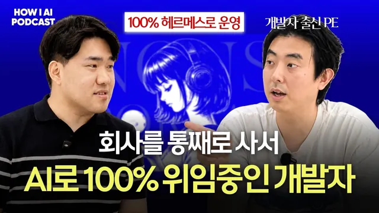

6인 회사 지분을 사서 AI로 100% 자동화로 돌려보고 있는 개발자 (진양의 인수창업 김지혁님)

원본 영상 보기 →
- 인수의 대상은 코드가 아니라 현금 흐름이에요
- AI가 SaaS 인수의 계산식을 바꿨어요
- 에이전트도 컨텍스트가 넓으면 둔해져요
한 줄 요약
개발자 출신으로 일곱 개 사업체의 영업권을 인수해 온 김지혁 님이 최근 인수한 SaaS를 PM·개발·콘텐츠 마케팅 AI 에이전트로 굴리는 과정을 조쉬와 나눈 대화예요. 인수할 때 무엇을 넘겨받아야 하는지부터 '쿼리어블 → 클로즈드 루프 → 셀프 임프루빙'으로 이어지는 AI 네이티브 회사 OS 구조까지, 실제 쓰는 도구 이름과 함께 풀어 줍니다.
전체 내용 정리
개발자가 인수 창업을 택했고, 이제 SaaS까지 사게 됐어요
김지혁 님은 '진양의 인수창업'이라는 뉴스레터를 운영하면서 지금까지 누적 일곱 개 정도의 사업체 영업권을 인수해 왔어요. 원래는 여러 회사를 다닌 개발자였고, 직접 창업도 몇 번 해 봤다고 해요. 그런데 몇 번 실패를 겪고 나니 0에서 1을 만드는 사업은 리스크 계산이 도무지 안 되더래요. 나이가 들고 아이도 생기면서 리스크를 헤지할 수 있는 형태의 사업을 고민하던 차에 첫 인수를 했고, 그게 생각보다 잘 풀려서 여기까지 왔다고 합니다.
첫 인수는 회사를 다니며 사이드로 시작한 아기 타이즈 쇼핑몰이었어요. 처음부터 인수를 노린 건 아니었고, 회사를 그만두려면 돈이 흘러 들어올 구조가 필요하다는 생각에 후보를 보다가 매출에 비해 가격이 싼 매물을 발견한 거죠. 인수 가격은 5천만 원 언저리였어요. 이후 타이즈 커머스 하나를 더 인수해 법인 하나로 합친 뒤 매각했다고 해요.
그 뒤로도 미국·캐나다로 배송하는 BTS 팬 선물 커머스를 인수했다가 잘 매각했고, 무인 아이스크림 매장은 폐업으로 정리했어요. 매장이 늘수록 리스크도 같이 늘어나는 사업이라 좋지 않다고 판단했다고 합니다. 지금은 B2B 음료 도매 스토어와 소상공인에게 주방 물품을 유통하는 회사를 창고 하나에 묶어 굴러가게 세팅해 두었어요. 음료 회사를 인수하러 갔더니 지게차부터 몰아야 했다는 일화도 나오는데, 조쉬는 개발자가 직접 음료를 나르는 모습이 대단하다며 감탄합니다.
그런데 SaaS는 비싸서 안 산다던 사람이 왜 마음을 바꿨을까요? 예전에 조쉬에게 SaaS는 인수하지 않을 것 같다고 말했던 가장 큰 이유는 가격이었어요. 멀티플(이익 대비 가격 배수)이 싸도 3년치, 보통 5년치, 비싼 건 7~8년치까지 불렀고, 조쉬는 10배·20배를 부르는 곳도 많다고 덧붙이죠. 김지혁 님이 인수할 때 가장 바닥에 두는 마인드셋은 서류상의 리스크 관리를 넘어 이 돈을 내고 샀을 때 그래서 회수할 수 있느냐는 질문이에요. 회수 그림이 안 그려져서 SaaS는 손대지 않았던 거예요.
그런데 AI 때문에 개발·디자인·마케팅 역량이 커머디티(누구나 싸게 쓸 수 있는 범용재)가 되면서 판이 바뀌었어요. 지식의 값이 0에 수렴할 거라고 믿는 사람이 많아지다 보니 예상보다 싸게 나오는 매물이 생겼다는 거죠. 게다가 원래 열 명 정도로 운영되던 SaaS라면 AI가 발전할수록 그 열 명이 필요 없어질 확률이 커요. 인수와 동시에 비용을 줄일 여지가 넓어진다는 뜻이라, 상방은 훨씬 넓어지고 하방은 더 안전해졌다고 보고 SaaS를 인수 후보군에 넣었다고 합니다.
조쉬는 운영이나 마케팅이 부담스럽지 않았는지 물었어요. 김지혁 님 대답은 반대였어요. 원래 세일즈·마케팅에 관심이 많은 개발자라 그쪽은 기존 방식을 최대한 흡수하면 됐고, 오히려 개발이 가장 큰 병목이었다고 해요. 인프라 유지보수와 고객 니즈에 맞춘 피처 개발을 혼자 다 커버할 수 있을지가 고민이었는데, AI 덕분에 그 비용이 크게 내려가 충분히 할 수 있겠다고 판단한 거죠.
인수할 때 진짜 넘겨받아야 하는 건 코드가 아니에요
SaaS를 인수한다고 하면 코드를 넘겨받는다고 생각하기 쉬워요. 김지혁 님은 어떤 사업체든 현금 흐름을 인수하는 게 가장 핵심이라고 못 박습니다. 유지되는 이익을 계속 지킬 수 있다는 전제가 먼저고, 그걸 위해 코드 베이스, 기존 고객 데이터베이스, 결제 모듈과 PG(결제대행) 계약, 원가율을 결정하는 거래처 정보가 따라와야 한다는 거예요. 그래서 "코드 베이스는 현금 흐름을 위한 이제 수단인 거지"라고, 앞뒤를 바꿔 생각하면 안 된다고 강조해요.
SaaS가 커머스보다 인수하기 어려운 이유도 여기서 나와요. 매출을 유지하려면 알아야 할 정보의 양이 엄청 많거든요. 제품이 어떻게 변해 왔는지, 신규 피처를 만들 때 무엇을 고려하는지, 어떤 실험이 실패해서 그 방향을 접었는지 같은 누적 노하우를 흡수하지 못하면 기존 팀이 했던 시행착오를 똑같이 반복하게 돼요. 이 간극을 줄이는 게 이번 PMI(인수 후 통합)의 가장 큰 과제였다고 해요.
해법은 기존 팀이 쓰던 Slack과 Notion을 통째로 받는 것이었어요. 처음엔 안 받아도 되겠다고 생각했는데, 하다 보니 히스토리를 파악하려면 무조건 있어야 하더래요. 그래서 정리되지 않은 이 데이터들을 임베딩(AI가 검색·참조할 수 있게 벡터로 바꾸는 작업)해서, 물어보면 자기보다 회사 맥락을 더 잘 아는 AI를 만드는 게 첫 번째 과제가 됐어요. 조쉬가 그런 민감한 정보까지 넘겨준 걸 보면 좋은 상대를 만난 것 아니냐고 하자, 김지혁 님도 인수에서는 우호적인 상대를 만나는 게 제일 중요하고 어쩔 수 없는 부분이라고 답합니다.
인수 직후에는 계기판부터 만들고, 섣부른 결정은 미뤄요
인수하고 가장 먼저 한 일은 제품 개선이 아니었어요. 여러 번 인수하며 얻은 경험상, 이 시기에 큰 의사 결정을 많이 하면 나중에 후회하는 경우가 많았다고 해요. 그래서 파괴적인 기능 변경이나 결정은 최대한 피하고, 대신 계기판(대시보드)부터 만들어요. 계기판 없이 운전하면 차는 무조건 사고가 난다는 비유를 들어요.
방법은 이래요. 먼저 기존 창업자가 보던 지표를 전부 내려받고, 그다음 앞으로의 방향에 맞는 지표를 새로 만들어요. SaaS는 모든 게 전산화돼 있어서 이 작업이 특히 빠르다고 해요. 이번에도 창업자가 메타베이스(Metabase, 데이터 시각화 도구)로 의사 결정용 데이터를 이미 시각화해 두고 있어서, 그걸 받아 자기 방식에 맞게 바꿨어요.
계기판을 그대로 쓰지 않는 데에도 이유가 있어요. 기존 창업자는 피처를 계속 내서 신규 매출을 만드는 성장용 계기판을 만들어 두지만, 인수자에게는 현금 흐름 회수가 최우선 과제거든요. 목표가 다르니 보는 지표도 달라질 수밖에 없죠.
매출을 끌어올릴 수 있는 지점은 '매출 레버'라고 불러요. 그런데 인수 직후에는 이것만 바꾸면, 내 인맥으로 마케팅만 조금 하면 매출이 오를 것 같다는 착각을 하기 쉬워요. 김지혁 님은 이걸 '똥촉'이라고 부르는데, 기존 창업자들이 이미 대부분 실험해 봤기 때문에 뻔해 보이는데 안 되고 있는 건 "안 하고 있는 이유가 있다"고 깔고 가는 게 마음이 편하다고 해요. 업사이드가 없다는 뜻은 아니에요. 첫 6개월에서 1년 안에는 실행하지 않는다는 원칙일 뿐이죠.
질문 답해 주던 봇이 PM·개발·마케팅 팀으로 자랐어요
김지혁 님은 SaaS를 인수해 AI 직원 다섯 명을 채용하고 키우고 있다는 글을 쓴 적이 있어요. 처음부터 계획한 건 아니었어요. 인수 실사 중에 질문이 너무 많아서 대신 답해 줄 봇을 하나 만든 게 시작이었죠. Slack 내용을 다 넣고 Notion MCP를 연결한 챗봇이었고, 양도자와 함께 있는 채널에 초대해 질문을 받게 했어요. 이 봇이 지금의 PM 에이전트 '제라드'예요. 데이터 접근 권한을 모두 갖고 있고, 라이브 DB에 쿼리를 날릴 권한까지 있어서 모든 의사 결정에 필요한 맥락을 가진 역할로 자리 잡았어요.
대표 사례가 에러 로그예요. 인수자에게 가장 큰 리스크 중 하나는 인수 후 버그가 났는데 못 고치는 상황이잖아요. 처음엔 기존 창업자에게 버그마다 설명을 달아 달라고 했지만 너무 소모적이었어요. 코드 베이스를 이해하고 라이브 DB 접속권이 있으면 누가 어떤 원인으로 겪는 문제인지, 어떻게 고치면 되는지 답할 수 있겠다고 보고 제라드를 에러 로그 채널에 초대했죠. 지금은 제라드가 원인을 분석하고, 재현 방법과 수동 해결법, DoD(완료 기준)를 담은 문서를 Notion의 개발 요청 관리 문서함에 올려요. 조쉬는 QA의 TC(테스트 케이스) 같다고 정리합니다.
그런데 모든 일을 제라드 하나에 몰아주자 문제가 생겼어요. 아는 게 방대해질수록 결정이 마음에 안 들기 시작한 거예요. "모델은 같은 거 쓰는데" 컨텍스트가 넓어지니 멍청해진 느낌이었대요. 그래서 역할을 나누고 불필요한 컨텍스트는 덜어냈어요. 다음으로 만든 게 개발자 페르소나 '길포일'이에요. HBO 드라마 「실리콘밸리」의 캐릭터 이름을 따서, 제라드는 PM, 길포일은 개발자를 맡았어요.
길포일은 헤르메스(Hermes) 프레임워크의 칸반 기능을 쓰는 오케스트레이터예요. 아래에 개발을 맡는 워커 하나와 리뷰어 둘이 있어요. 빌드는 Codex, 리뷰는 Claude, 그리고 OpenRouter의 무료 모델(엔비디아 모델)로 한 번 더 리뷰해요. 게이트키핑은 OpenRouter 쪽이 맡는데, 덜 똑똑한 모델은 보수적으로, 더 똑똑한 모델은 기능 개선까지 제안하는 진보적인 리뷰를 하게 세팅했다고 해요. 이게 최선인지는 본인도 모르겠고, 하다 보니 이렇게 됐다고 솔직하게 말해요.
세 번째는 이번에 실험적으로 시작한 콘텐츠 마케팅 오케스트레이터예요. 김지혁 님이 인스타그램 계정을 이런 목적으로 키우고 싶은데 어떻게 하면 좋을지 제라드와 토론하면, 제라드가 목표를 담은 Notion 문서를 만들어 줘요. 그중 SNS 계정을 운영하고 탑 콘텐츠를 만들라는 조언이 있어서, 그걸 실행할 에이전트를 따로 만든 거죠. 이쪽도 리서치·라이팅·리뷰 세 워커를 둔 구조라, 3×3으로 총 아홉 개 프로필을 쓰지만 김지혁 님이 직접 대화하는 건 세 오케스트레이터뿐이에요.
일하는 흐름은 이래요. PM이 개발 스펙을 정리하면 김지혁 님이 이해하고 다듬어 Notion 문서로 만들고, 그걸 개발자 에이전트에 넘겨요. 개발자가 PR을 올리면 마지막 검토는 본인이 해요. 보안 이슈나 이상한 부분이 없는지 직접 보는데, 아직 라이브 코드에 들어가는 코드를 100% 믿을 순 없어서래요. 다만 한 번도 수정을 요청한 적은 없을 만큼 잘한다고 해요. 인수할 때 받은 앱은 세 개로, 메인 앱은 유료 전환이 일어나는 서비스고 나머지 둘은 무료 유저만 있어요. 지난주부터 이 앱들에 본격적으로 PR을 넣기 시작했다고 합니다.
AI 네이티브 회사 OS는 어떻게 쌓아 올렸고, 사람은 어디서 끼어들까요?
조쉬는 Y Combinator가 말한 AI 네이티브 회사의 세 단계, 곧 쿼리어블(queryable, 회사 데이터를 AI가 조회 가능한 상태), 클로즈드 루프(closed loop), 셀프 임프루빙(self-improving)에 맞춰 질문을 이어 가요.
쿼리어블은 에이전트들이 진실로 취급할 수 있는 자료, 곧 SOT(Source of Truth)가 어디 있는지 정리하는 일이에요. 김지혁 님 회사는 Notion과 Slack에 자료가 많고, 프로젝트는 Linear, 라이브 서비스 지표는 Metabase에 있어요. 이걸 정리한 뒤 각 에이전트에 어떤 자료를 연결할지 정의하면 흐름이 만들어져요. 버그가 들어오면 제라드가 DB에서 어떤 사용자인지 확인하고, 코드베이스에서 몇 번째 줄에서 에러가 나는지 찾고, 알려진 버그인지 판단한 뒤 Notion에 버그 픽스 리포트를 내는 식이죠. 김지혁 님은 쿼리어블을 회사의 모든 의사 결정에 필요한 정보를 전산화하는 작업으로 이해하고 있어요.
데이터를 꾸준히 쌓는 장치도 있어요. 사람과 에이전트가 나눈 모든 대화는 랭퓨즈(Langfuse, LLM 대화 추적 도구)에 저장되고, 매주 한 번 크론으로 에이전트 리뷰 세션을 돌려 중요했던 결정이나 나빴던 사례를 Postgres로 빼내요. 재밌는 건 이 스택을 김지혁 님이 고르지 않았다는 점이에요. 인수한 서비스가 AWS 인프라를 쓰니 그걸 최대한 활용하라는 가이드만 줬고, 랭퓨즈와 Postgres는 제라드가 골랐대요. 이 구조를 정리한 문서도 제라드가 업데이트하면서, 회사가 얼마나 AI 네이티브한지 스스로 평가한다고 해요.
장기 메모리는 혼초(Honcho)가 맡아요. 헤르메스 프레임워크가 가장 미는 개념 같다며, 프로필마다 장기 메모리를 따로 두고 어떤 식으로 답하는 게 좋을지 스스로 계속 다듬는 외부 서비스 레이어라고 설명해요. 본인도 블랙박스처럼 쓰고 있지만, 에이전트에게 정확도 개선에 도움이 되냐고 물었더니 된다고 하더래요.
문서 색인은 주기를 나눠요. 잘 안 바뀌는 문서는 한 번 임베딩해 따로 폴더에 두고, 회의록이나 시장 조사처럼 매주 바뀌는 문서는 제라드가 매주 다시 임베딩해요. 매일 대화하며 새로 생기는 회사 맥락이 담긴 문서는 매일 색인하는데, 이유는 간단해요. "그래야 내일 왔을 때 헛소리 안 하니까." 랭퓨즈에 쌓인 대화를 색인하는 건 일주일에 한 번이에요.
클로즈드 루프는 김지혁 님도 이해하는 데 시간이 걸렸다고 해요. 대표 예가 온도 조절 장치처럼 결과가 다시 입력으로 돌아가는 구조인데, 내가 넣은 인풋으로 나온 산출물이 다시 인풋이 되게 만드는 것으로 이해하고 있어요. 매주 크론으로 Notion 문서를 다시 색인하고 좋았던 대화를 다시 집어넣는 과정도 쿼리어블보다는 클로즈드 루프에 가깝다고 봐요. 에이전트가 뱉은 것 중 괜찮았던 걸 모아 두면, 다음 결정 때 Notion을 MCP로 조회하면서 그걸 다시 참조하니까요.
이 루프에서 사람의 역할은 분명해요. 매주 김지혁 님과 동업자가 에이전트 답변을 리뷰하면서 좋았던 건 체크, 최악이었던 건 X 표시를 해요. Slack 이모지 반응을 동기화하는 장치도 있어서, 대화하다 마음에 안 들면 X를 세게 달아 두면 에이전트가 이를 보고 긍정으로 반영할지 부정으로 반영할지 정한대요. 조쉬가 Arize AI 같은 '에이전트 CCTV' 서비스를 언급하자, 김지혁 님은 나중에 다른 서비스가 그 역할을 하더라도 결국 무엇이 좋고 나빴는지는 사람이 계속 매뉴얼로 알려 줘야 한다고 봐요.
셀프 임프루빙은 그 결과를 재료로 에이전트가 스스로를 고치는 단계예요. 매주 리뷰가 끝나면 에이전트가 자기에게 연결된 soul.md, agent.md, 메모리 파일을 직접 업데이트해요. 리젝트된 건 빼고 재사용할 수 있는 교훈 위주로 반영하라고 지시해 두었대요. 스킬과 툴은 헤르메스에 많이 맡겼어요. 쓰다 보면 에이전트가 이 작업을 여러 번 반복했으니 스킬로 만들겠다고 나서는 경우가 많다고 해요. 그래서 김지혁 님은 이렇게 정리해요.
데이터만 잘 넣어 주면, 사람이 직접 할 일은 무엇이 좋고 나빴는지 판단해 다시 에이전트에게 넣어 주는 구간 하나뿐이라는 거예요.
100% 자동화가 아니라 30%, 병목은 여전히 사람이에요
그렇다고 모든 게 자동으로 돌아가진 않아요. 하루 일은 지금도 김지혁 님이 오늘은 버그 티켓 이거 고치자는 식으로 대화를 열면서 시작하고, 이걸 자동화하진 않았어요. 전략, 자본 배분(capital allocation), 이번 2주 동안 어떤 프로젝트를 시작할지 같은 '어디로 갈지'는 본인이 정하고, '어떻게 할지'부터 PM에게 맡겨요. 에이전트가 스스로 교정하는 건 자기 답변의 정확도뿐이에요.
조쉬는 Y Combinator 세션에서 CS가 들어오면 크론으로 알아서 고치고 PR을 올리고 고객에게 메시지까지 보내는 사례를 소개해요. 김지혁 님이 그렇게 하지 않는 이유는 두 가지예요. 하나는 병목이 어차피 본인이라는 점이에요. PR을 직접 보고 있으니 자동화해도 의미가 없고, 에이전트를 "아직은 못 믿겠는데" 개선하는 중이라고 해요. 다른 하나는 보안이에요. 지금 인프라는 내부에서만 쓰는 구조라 보안을 전혀 신경 쓰지 않았는데, 엔드포인트를 열면 공격 가능성까지 고려해야 하니 머리가 아파진다는 거죠. 목적은 인수한 자산을 잘 운영하는 데 있고, 이 시스템은 수단이라 상대적으로 느리게 간다고 해요.
AI 네이티브 OS 달성률을 묻자 30% 정도라고 답해요. 쿼리어블은 꽤 많이 됐고, 남은 건 동업자와 구두로 하는 회의 내용을 쌓는 일이에요. 효율적으로 할 방법에 확신이 없어 아직 안 하고 있고, 일단 모든 대화를 최대한 Slack에서 하며 남겨 두고 있대요. 본인은 이 분야의 프런티어가 아니라서 사업에 집중하다가 프런티어들이 길을 뚫으면 가져다 쓰겠다고 말해요.
다음 목표는 SaaS를 두 개 정도 더 인수하는 거예요. 이 AI 시스템이 기존에 열 명 넘게 운영하던 서비스를 한두 명으로 돌릴 수 있는지 검증해야 추가 인수가 의미가 있으니, 그 실험을 계속하겠다고 합니다.
핵심 인사이트
- 인수의 대상은 코드가 아니라 현금 흐름이에요: 코드 베이스, 고객 DB, PG 계약, 거래처 정보는 모두 현금 흐름을 지키기 위한 수단이에요. 이 순서를 뒤집으면 무엇을 넘겨받아야 하는지부터 틀어집니다.
- AI가 SaaS 인수의 계산식을 바꿨어요: 지식의 값이 떨어진다고 믿는 매도자가 늘며 매물이 싸졌고, 인수자는 운영 인력을 줄일 여지가 커졌어요. 김지혁 님은 이를 상방은 넓어지고 하방은 안전해진 상황으로 봐요.
- 에이전트도 컨텍스트가 넓으면 둔해져요: 같은 모델인데도 한 에이전트에 모든 걸 몰아주자 판단이 흐려졌고, PM·개발·콘텐츠로 역할과 자료를 나누자 나아졌어요. 에이전트를 늘릴 때 기준은 '역할별로 필요한 컨텍스트'예요.
- 자동화의 마지막 고리는 사람의 피드백이에요: 랭퓨즈, Postgres, 혼초 같은 도구가 있어도 무엇이 좋고 나빴는지 알려 주는 건 사람이에요. 영상 제목의 '100% 자동화'와 달리 본인이 매긴 진척도는 30%라는 점도 눈여겨볼 만해요.
오늘 당장 해볼 것
- 지금 회사의 SOT가 어디에 흩어져 있는지 표로 적어 보세요. Notion, Slack, 프로젝트 관리 도구, 지표 대시보드처럼 칸을 나눠 두면 AI에게 무엇을 연결해야 할지 바로 보입니다.
- 에러 로그나 고객 문의 채널 하나에 Notion MCP를 연결한 Claude 같은 에이전트를 붙이고, 원인·재현 방법·수동 해결법을 정해진 양식으로 문서화하게 해 보세요. 사람이 매번 설명하던 시간이 얼마나 줄어드는지 감이 옵니다.
- 에이전트 답변에 Slack 이모지로 좋음·나쁨을 표시하고, 일주일에 한 번 그 기록을 모아 프롬프트 파일(agent.md 같은)을 고치게 해 보세요. 클로즈드 루프를 가장 가볍게 체험하는 방법이에요.